장갑 크레인 항구요새
테섭 leesh603/head-on-test-preview의 main d0ad86a 기준. 기존 원화와 부품을 유지하며, 물리적인 크레인 공격과 부위별 공략을 개편했습니다. 아래 장면은 저장소의 실제 drawStageBoss를 native Canvas로 실행한 결과입니다. 단색 수면에서 부품 정합과 공격 효과를 확인하며, 브라우저 플레이·입력·전체 HUD 검증은 포함하지 않습니다.
| 부위 | 역할 | 파괴 효과 |
|---|
| 크레인 붐 | 실제 줄 끝에서 기뢰를 끌어올림 → 예고 궤도로 휘두름 → 발사 위치에서 기뢰 3개 투하. 목표는 예고 시작 때 고정. | 진행 중 휘두르기와 미투하 기뢰 취소. 회전축 즉시 노출. 이미 투하된 기뢰는 남음. |
| 탄약고 | 기뢰 보급과 포좌 3연사를 공급 | 1회 유폭, 본체 피해 15%. 기뢰 보급 중단, 포좌 1발 사격으로 변경 및 재사격 간격 1.6배. 크레인은 금속 훅으로 계속 휘두름. |
| 포좌 4곳 | 석재 기지는 고정, 철제 포탑만 부드럽게 조준·반동. 실제 포구에서 순차 사격. | 각각 독립 파괴. 해당 부위의 대기 사격 중단. 다른 포좌는 유지. |
| 수상기 시설 | 1.05초 준비 뒤 0.24초 간격으로 2기 출격. 진영에 맞는 기존 수상기 사용. | 준비 중인 출격 취소, 이후 발진 중단. |
| 회전축 | 붐 파괴 또는 외곽 3곳 파괴 후 노출 | 붐이 함께 붕괴하고 중앙 코어 개방. 남은 포좌·시설은 계속 작동. |
요새는 고정된 선착장에서 싸우며 전체가 반동으로 튀거나 배처럼 떠내려가지 않습니다. 원화와 발사점·피격점을 공유하고, 파괴된 붐·탄약고·시설은 사라지는 대신 새 잔해 아틀라스를 사용합니다. 지속 기뢰는 동시 9개·수명 8.5초로 제한하며 예고 동안에는 피해가 없습니다.
검증: 기존 46개 + 신규 13개 = 59개 테스트 통과. 루트 JS 107개 구문 검사 통과. 참조 256개를 로컬 또는 기준 원격 트리와 대조해 누락 0개. 전후 각 12장(PC 1280×800 / 모바일 390×844), 렌더링 에셋 누락 0개. Canvas 호출 전후 변환 상태 보존 확인. 실제 게임 호스트의 폭발 효과 제외·투하 기뢰 배치·9개 상한 연동 확인.
로컬 배포 검사는 변경하지 않은 boss-drachen-parts-v2.webp 한 개가 미다운로드 상태로 표시됩니다. 기준 원격 트리에 해당 파일이 존재함을 별도 확인했습니다. 모바일 너비에서는 모바일 프레임이 표시됩니다. 신규 아틀라스와 포좌 캐시가 기존 부품의 중복 디코딩을 줄이도록 로딩 대상을 조정했습니다.테스트 결과 · 참조 검사 · 상태 기록 · 재현 스크립트 · 에셋·프롬프트 기록 · 부품 아틀라스
초기 배치
개편 전 · 테섭 main d0ad86a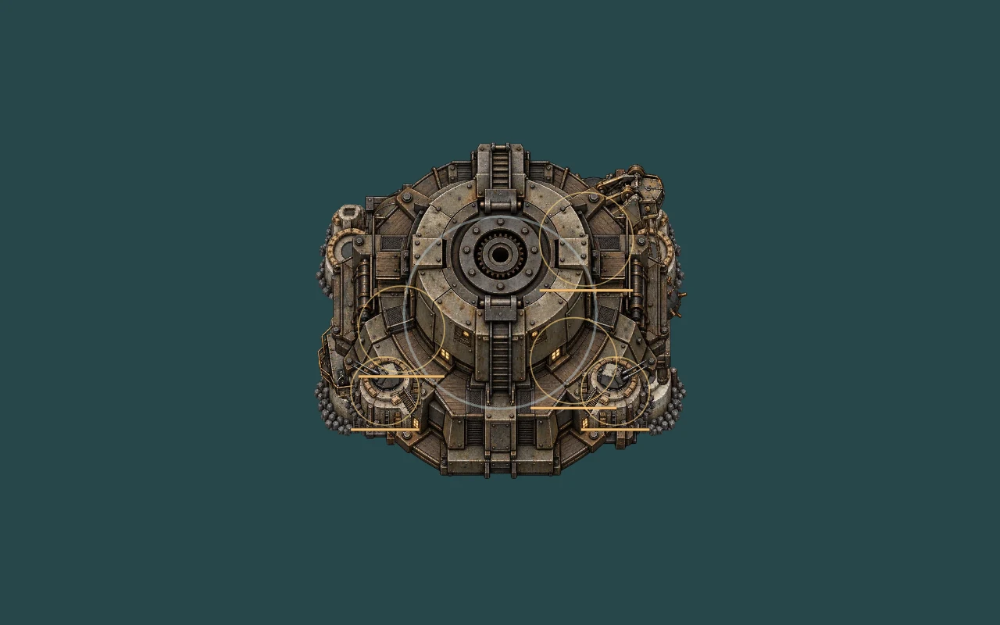
개편 후 · 크레인 작업 브랜치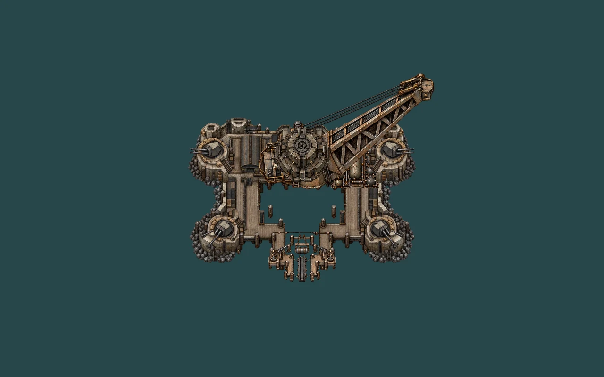
끌어올리기·휘두르기 예고
개편 전 · 테섭 main d0ad86a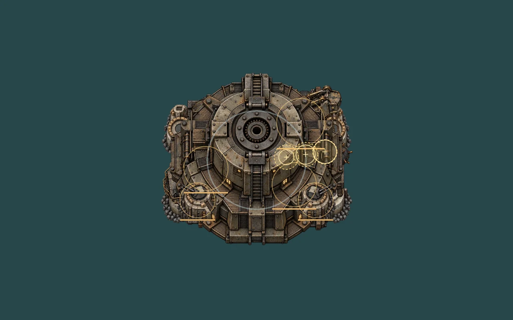
개편 후 · 크레인 작업 브랜치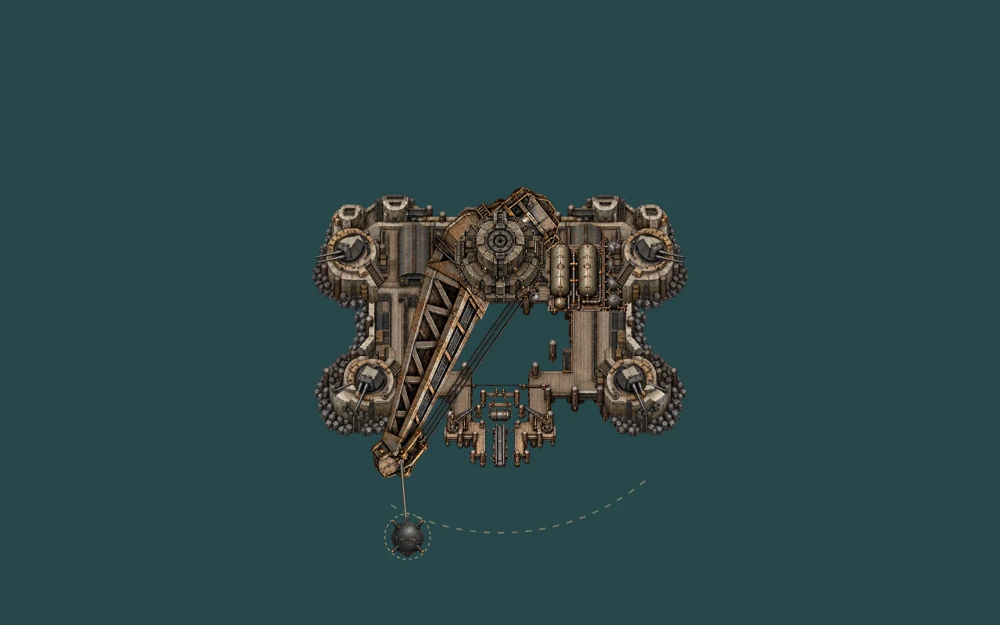
크레인 기뢰 휘두르기
개편 전 · 테섭 main d0ad86a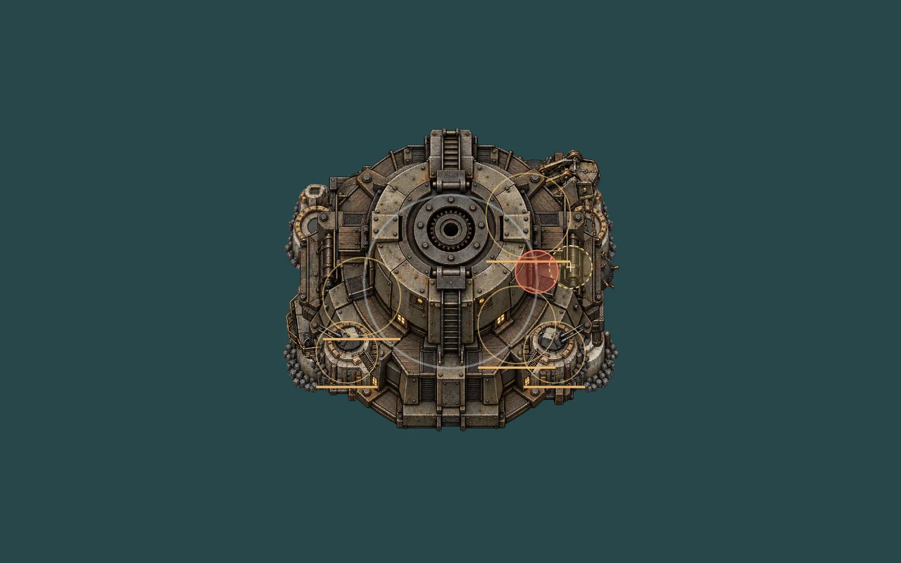
개편 후 · 크레인 작업 브랜치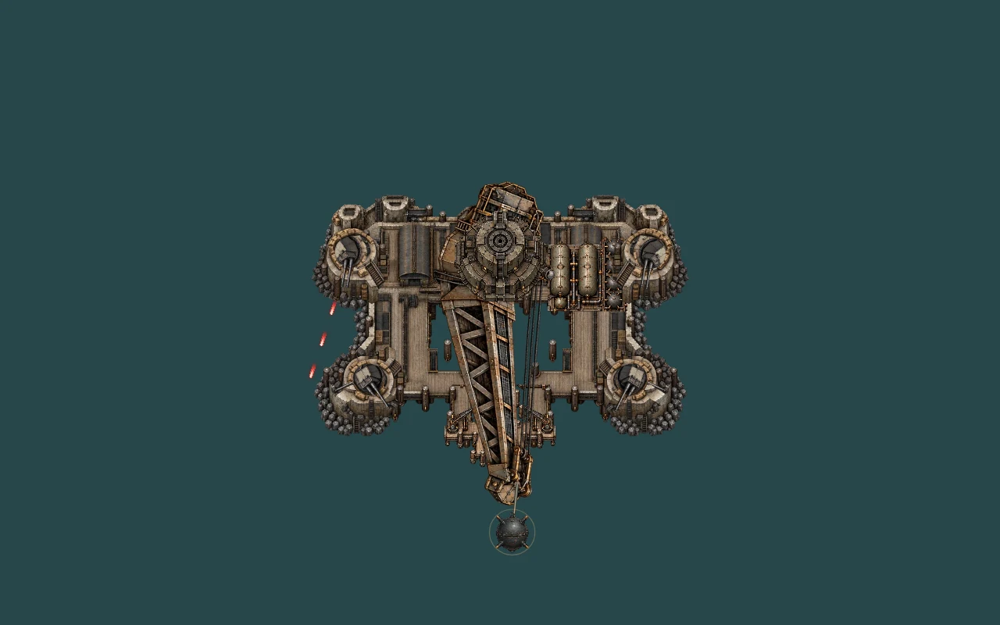
탄약고·포좌·발진 시설 파괴
개편 전 · 테섭 main d0ad86a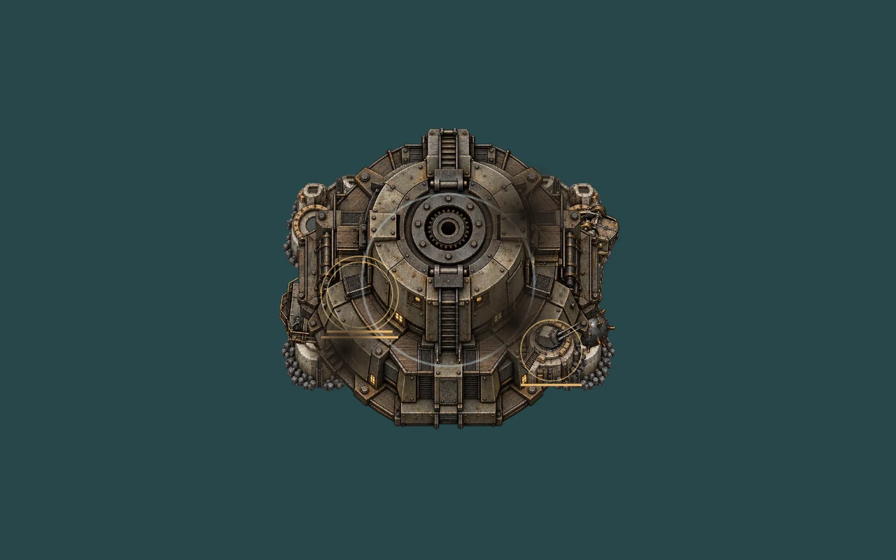
개편 후 · 크레인 작업 브랜치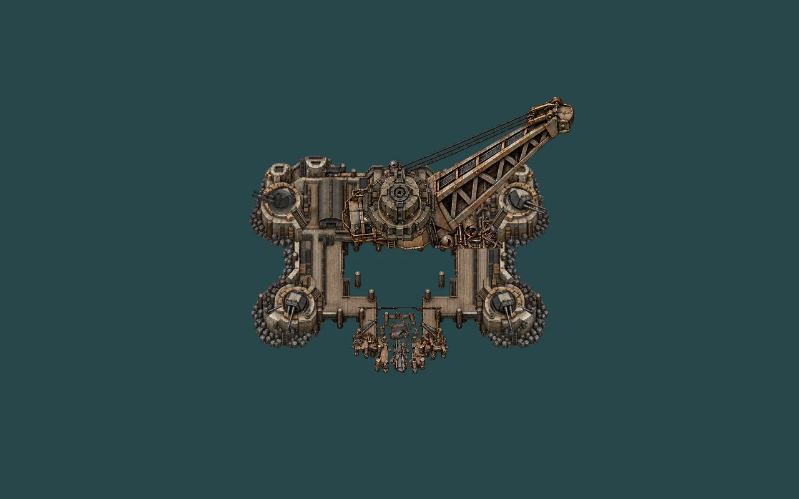
붐 붕괴·중앙 코어 노출
개편 전 · 테섭 main d0ad86a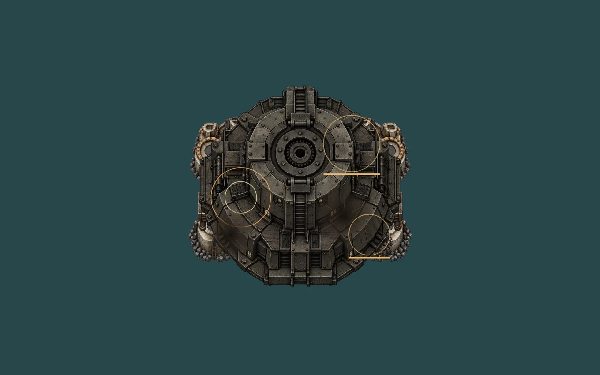
개편 후 · 크레인 작업 브랜치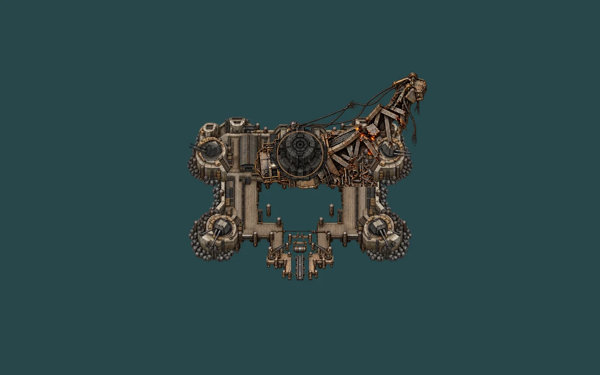
격파 후 고정된 선착장에서 붕괴
개편 전 · 테섭 main d0ad86a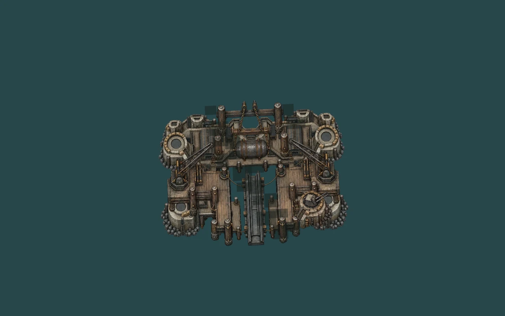
개편 후 · 크레인 작업 브랜치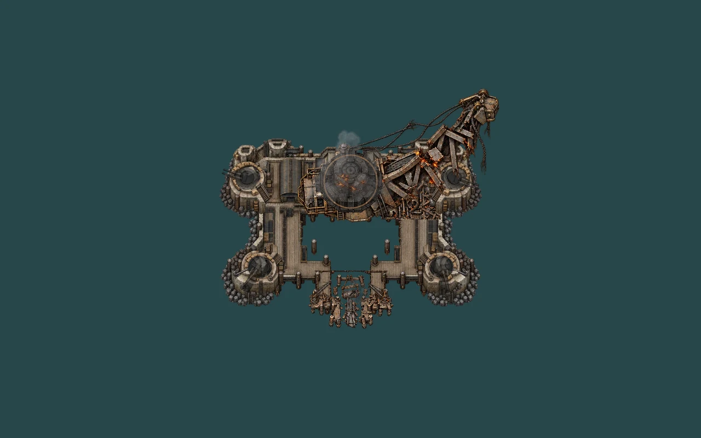